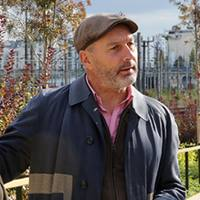
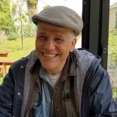

Friday Tour Group
Full tour details · Season 2025–2026
About the Friday Tour Group
The Friday Tour Group (FTG) is a friendly, informal group of people who share a love of culture, history, and the extraordinary city of Paris. We have been exploring together for many years, and our community grows a little each season. From September to June, we visit museums, galleries, gardens, and hidden corners — always with an expert guide, always with good company.
Regular Members
200€ per year. Sign up for all tours! Regular members enjoy free or reduced entry on most tours and have priority booking for all events.
Waitlist Members
60€ per year. Includes all video tours free of charge. Waitlist members may join any walking or museum tour if a place becomes available, at a higher per-tour fee.
Guests
25€ per tour or video. Guests may join us up to once per season, after which they are warmly invited to become members.
Meeting Time Protocol
We have two times: MEET and START. Please arrive by the MEET time so we can begin promptly at the START time.
Costs & Payment
Tour costs cover guide fees, entrance fees, and any group charges. Payment is made in cash at the meeting point on the day of the tour.
Tour Limits
Each tour has a maximum number of places. Sign-up is on a first-come, first-served basis. A signed-up place is a commitment.
Video Tours
Video tours take place on Thursdays via video conference. Meet at 16h45, start at 17h00, finish at 18h15, with questions until 18h30.
Co-Directors & Day-of Contact
Paul GAVORA 06 73 31 98 92
Lee HUBERT 06 75 06 61 99
Our Guides
The Friday Tour Group is privileged to work with some of the finest guides in Paris — historians, artists, archaeologists, and passionate experts who bring the city to life.
Mary Bartlett
A lifestyle and hospitality consultant with over 20 years of experience living in Paris. Drawing from her background in French social customs and gastronomy, she specializes in the "Art of the Table" and the history of French entertaining.
Debbie Baron
An expert in French gastronomy and the concept of terroir, Debbie is the director of Domaines & Terroirs. She works directly with traditional producers to master the history, production, and classification of French artisanal foods, with a primary specialty in French cheeses.
Mariska Beekenkamp-Wladimiroff
An art historian and educator who earned her BA and MA from the Courtauld Institute of Art in London. Founder of Art Historical London and a specialist in 17th-century Dutch Baroque art, the self-portrait, and the history of the art market.
Chris Boicos
A professor of art history (MPhil, Courtauld Institute; Sorbonne), founder of Paris Art Studies and director of Chris Boicos Fine Arts. Specializes in 19th- and 20th-century European art, contemporary curation, and modern architecture.
Oriel Caine
Co-founder of Paris Walks, guide-lecturer with a Master's in History, Art History & French Literature. Co-author of Paris Then and Now. Specializes in the visual history of the city from the medieval period to the present day.

Pascale Chauvel
A practicing artist and museum guide with a BAC in Arts from the Ecole du Louvre. She has worked for 25 years as a guide in the Parisian national museums, notably the Musée d'Orsay, and paints in pastel, oil, watercolour and ink.
Thomas Emery
Degrees in geography and history with a passion for architecture. A national tour guide since 2008, working for French National Monuments. Fields of interest include ancient history and 19th- and 20th-century art.
Noha Escartin
Born in Egypt, Paris resident for 35 years. Studied Egyptology and Physics at AUC, then specialised in Simultaneous Interpretation and Art History. Also teaches at universities including CNAM, Cergy and Nanterre.
Dr. Sandra (Sandy) Gogel
Founder of La Source Parisienne, an antique consultancy. PhD from the University of Chicago. A recognized expert in antiques and art, known for insider-led visits to the Hôtel Drouot auction house.
Mary Ellen Gogel
Artist and amateur historian, Paris resident for several decades. Contributor to cultural programs at the American Cathedral and Library. Expertise in religious architecture, Gothic history, and the evolution of writing and manuscripts.
Ellen Hampton
PhD historian, author, and former Sciences Po lecturer. Author of Women of Valor: The Rochambelles on the WWII Front. Specializes in the social history of WWII, the French Resistance, and women in military history.
Thierry Heil
Licensed guide for over 15 years in Paris and throughout France. A specialist of Paris who combines little-known areas with important historical and cultural facts. Also organizes study abroad programs and first-class stays for international universities.
Ingrid Held
Graduate of the Ecole du Louvre (Greek archaeology) and Master's in Art History from the Sorbonne. Worked over 10 years at the Musée des Arts Décoratifs as a lecturer and researcher, now a freelance guide and historian.
Lee Hubert
Paris resident since the 1970s. Official guide for the Wallace Fountains Society, long-time volunteer and community organizer. Specializes in the stories behind Parisian landmarks and the literary history of the city's neighbourhoods.
Eric John Kaiser
French-American singer-songwriter and guitarist, born and raised in Paris. Six studio albums; performed at the Smithsonian, De Young Museum, and Solidays festival. Lectures on Francophone music at Portland, Oregon, where he now lives.
Amy Kupec-Larue
30 years living and working in Paris. Guided the NY Botanical Garden and Garden Club of America on tours through French gardens. Permanent member of the Bagatelle Rose Commission since 2009. Author of the Great Trees of Paris map.

Jacky Libaud
Expert in Islamic garden history and Paris parks guide for the City of Paris since 2001. Founder of "Balades aux Jardins" with 66 different visits through parks and neighbourhoods of Greater Paris. baladesauxjardins.fr

Ken Nesbitt
Retired Canadian Air Force officer with a Master's in war studies from the Royal Military College of Canada. Has spent 18 years in Europe providing guided tours of historical battlefields and lectures on military history.
Brad Newfield
French-American historian, Paris resident since 1994. PhD in History from UCLA. Specializes in Franco-American relations, the American Founding Fathers in Paris, the French Revolution, and American expatriate writers on the Left Bank.
Lynn Rainard
Retired professor of history specializing in US political and cultural developments. Expertise in French-American exchanges and 20th-century political history. Has presented a Café Lecture on French-American relations in Paris.

Mervyn (Merv) Rothstein
Veteran journalist, 30 years as writer and editor at The New York Times (chief theater reporter). Contributor to Playbill for over three decades, Tony Awards Nominating Committee member. Specializes in performing arts history and cultural journalism.
Elaine Sciolino
Celebrated author and former Paris Bureau Chief for The New York Times. Chevalier of the Legion of Honor. Author of The Seine: The River that Made Paris and The Only Street in Paris. elainesciolino.com
Christopher Spence
Licensed guide, 26 years in Paris. One of the main guides for Paris Walks; presents virtual talks with London Walks. Writes on Paris history for newspapers and appears in documentaries. Keen amateur fossil hunter.

Jean-Manuel Traimond
Native Parisian, giving tours since 1990. Published author whose works include a Naughty Guide of the Louvre and the Musée d'Orsay, a history of erotic art, and essays on religion and social history. A true man of letters.
Xenia Ventikou
Art History and Art Conservation graduate (Greece and London). Former sculpture conservator at the Victoria and Albert Museum. Trained Guide-Conférencier National; joined the Musée des Arts Décoratifs team to share the stories, details and secrets of their collections.
Volunteering:
The Heart of FTG
Help us write the next chapter.
Our Legacy is in Your Hands
For decades, the Friday Tour Group has explored the soul of Paris — and beyond — together. We've stood in hidden crypts and quiet gardens. We've stepped into rooms most visitors never see. We've wandered through museums, archives, cathedrals, back corridors, and heard stories layered with centuries of history.
We've learned. We've discovered. We've been amazed — together.
And here is the quiet truth behind every tour we've taken:
FTG only exists because of its members.
Every Tour has a Volunteer Behind It
Your annual membership allows us to secure exceptional guides, book venues in advance and get access to exclusive places… But money alone does not run FTG. People do.
Every confirmation email, every booking, every deposit, every curated description and every schedule is handled by a small, dedicated team of volunteers. Currently, our Co-Chairs Paul and Lee and planners Barbara and Dee, with help from our former Co-Chair Nancy — carry the entire load.
They are dedicated; they do it because they love this group. But they are over-stretched. To keep our tours running and our group thriving, we need to grow this team today.
Every Contribution Counts
Most of you already contribute in "small" ways that keep the spirit of the group strong:
- Showing up on time with exact change
- Welcoming a new face with a warm hello
- Helping with attendance or sharing metro updates on WhatsApp
- Inviting new friends to join to keep our community growing
♥ Step Up: Help Make the Magic Happen!
If you have enjoyed our tours and want FTG to continue for years to come, the most meaningful step you can take is to plan just one or two tours a year.
"But I've never done this before!"
Don't worry — planning a tour is like baking a cake using a tried-and-true recipe:
- Expert Guidance: You'll work alongside one of our experienced guides who know tour planning inside and out.
- The "Recipe": We provide a simple template designed by experienced planners to collect every detail.
- Full Mentorship: Paul, Lee, and Barbara will mentor you step-by-step. You are never alone.
- No French Required: When in doubt, just be polite and keep your favourite translation app on hand!
" I planned a tour for a place I'd never been to and knew nothing about. Reading about it online didn't prepare me for the real experience at all. Watching the faces of our members as they arrived at this amazing site filled with history, and witnessing the tour that I had planned unfold seamlessly was pure magic. "
— Barb T, Carmes Convent, November 2023
Ready to take part?
Whether you can help take attendance this Friday or want to try your hand at planning a tour next fall, we want to hear from you. There's no binding contract — just the opportunity to be the reason the next tour happens.
Our current planners — Paul, Lee, and Barbara — have been our anchors. By planning just one tour a year, you give them the chance to simply show up and enjoy a tour as a member again, just like you.
The buildings will still stand.
The masterpieces will still take your breath away.
The history will still exist.
But without your help, we may not be here to discover it together.
"FTG Runs on Volunteers.
Be the One Who Makes the Next Tour Happen." ♥
Contact us today: ftg.membership@gmail.com
Or talk to Barbara, Lee, or Paul at the next tour!